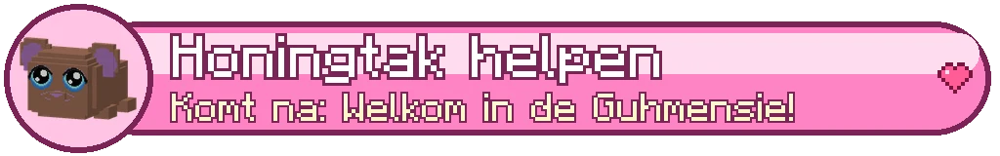

De Schemerwortel zone 3
AreasGebieden
| AreaGebied | Level | SecretsGeheimen | CampfiresKampvuren |
|---|---|---|---|
| Honingtak ⚑ | 30-50 | 3 | 2 |
| De Kruinzee | 30-34 | 4 | 4 |
| De Takkenbanen | 34-38 | 1 | 2 |
| De Kaaszeppelinwerf | 38-40 | ||
| De Schorsstad | 40-43 | 2 | |
| Het Rijpad | 40-43 | 5 | 1 |
| De Wortelvelden | 43-46 | 4 | 8 |
| Het Wortelduister | 46-49 | 3 | 3 |
| Het Hart van de Boom | 49-50 |
BossesBazen


CreaturesWezens
Bijtbloesem, Bladrover, Grauwe Rups, Grauwe Wespenzwerm, Kaasschutter, Schorsmarter, Harsgolem, Lantaarnloze, Schorskruiper, Rotzwijn, Wortelslang, Mika-schimmelboer, De Dove Ziener, Wortelschim, Schimmelbolletje
Main storyHoofdverhaal
- Een boom zo groot als een berg lv 30
- Bezoek uit de lucht lv 30
- De Pluimstal lv 30
- Grauwe vlekken lv 31
- Het oude nest lv 33
- Kleine voetjes lv 34
- Imkerdorp Zoemrust lv 35
- De Kaaszeppelinwerf lv 37
- De binnentrap lv 39
- Zeven lantaarns en een graaf lv 40
- Rot aan de wortel lv 42
- Het Wortelduister lv 45
- Het Hart van de Boom lv 47
- Vahoegnir komt thuis lv 48
- Naar de Zwevende Stad lv 48
Side questsZijquests
- Veertjes zoek Side questZijquest
- Nog één keer de top Side questZijquest
- Thee in het moeras Side questZijquest
- Knoest z'n vrienden Side questZijquest
- Lusje's kaartjes Side questZijquest
- Het nest van de Knuffelridder Class trialKlassenproef
- Het nest van de Pluisjager Class trialKlassenproef
- Het nest van de Vadsmagiër Class trialKlassenproef
Sets
About this zoneOver deze zone
De Schemerwortel (zone 3)
Een boom zo groot als een berg, voor avonturiers van level 30 tot 50. Na het verhaal van de Splinterpieken vliegt het luchtschip je vanuit De Haven of Kandijkom naar Honingtak, een imkersstadje op een tak. Hier krijg je je eerste rijdier.
Erheen
Maak eerst het verhaal van de Splinterpieken af en word level 30. Dan vliegen Stuurguh Zeppie (De Haven) en Kapitein Poolster (Kandijkom) naar Honingtak. De eerste vlucht gaat langs de stam omhoog, door de wolken. Kijk goed.
De lagen
Bovenin de Kruinzee (lv 30-34), dan de Takkenbanen (lv 34-38), in de holle stam de Schorsstad (lv 40-43), op de grond de Wortelvelden (lv 43-46) en onder de boom het Wortelduister (lv 46-49). Er zijn twee kerkers: de Kaaszeppelinwerf en het Hart van de Boom.
Je Pluimguh
Bij Stalmeester Veertje in de Pluimstal kies je je eerste rijdier uit drie jonge Pluimguhs. Roep hem met X. Van hoge plekken zweef je met hem naar beneden; omhoog gaat met trappen, liften en de bloesemwind.
Honingtak
Een gezellig stadje op een reuzentak: bijenkorfhuisjes met raatgevels, de zoemende markt op het Bloesemplein, de Raattrossen die onder de tak hangen met café De Zoete Raat en de Nestkapel, en de Pluimstal waar de Pluimguhs wonen.
Wie woont er?
Imkermoeder Raatje (de burgemeester), Ordemeester Wasja in de Nestkapel (klasse wisselen en op klasse-level 50 je vierde titel), Stalmeester Veertje, Cafébaas Zoet, Jagersguh Raap met het premiebord, Smidguh Hamerhoning, Juweliersguh Glinsterhoning, Liftguh Katrolletje van de Honinglift en heel veel imkers met hoedjes en sluiers.
Het premiebord
Vanaf level 40 hangt er in de Jagershut elke dag een handvol premies: jagen, verzamelen, bezorgen en schimmel opruimen. Geen haast en geen ranglijst.
Quests in De Schemerwortel
Het verhaal van zone 3 (de gouden !) leidt je van de kruin over de takken en door de holle stam tot diep onder de wortels. Elke stap zegt bij wie en waar je moet zijn; rechtsboven en in je questlog (J) zie je altijd je volgende stap.
Zijquests
Een paar korte zijquests naast het verhaal: verdwaalde Pluimkuikens zoeken, Opa Bast nog één keer naar de top brengen, honingthee met moerasbloemen, slapende lichtjes wakker maken en vijf uitkijkpunten voor Lusje's kaart.
Geheimen van De Schemerwortel
Tien knuffels (drie alleen zwevend te bereiken), vijf vreemde imkersporen in Honingtak, vijf schatten en acht oude reliëfs van het boomvolk in de wand van de stam. Ze glinsteren als je dichtbij bent.
Glinsters
Hartjes = een knuffel, paarse sterretjes = een imkerspoor, goudgeel = een schat, wit licht = een reliëf van het boomvolk. Het FTB-hoofdstuk "Het Vadsrijk" heeft een eigen stukje voor De Schemerwortel; niks staat op slot. Je Verkenningsboek (B) houdt alles bij.